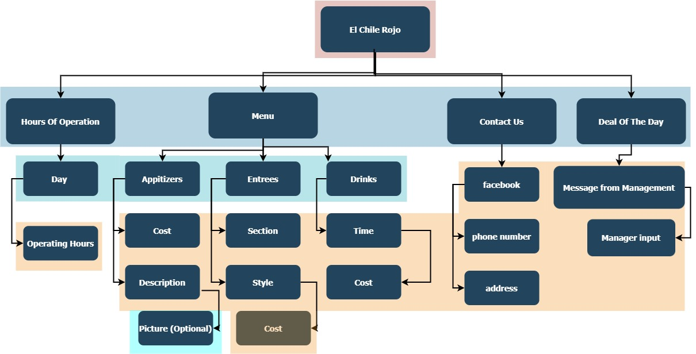
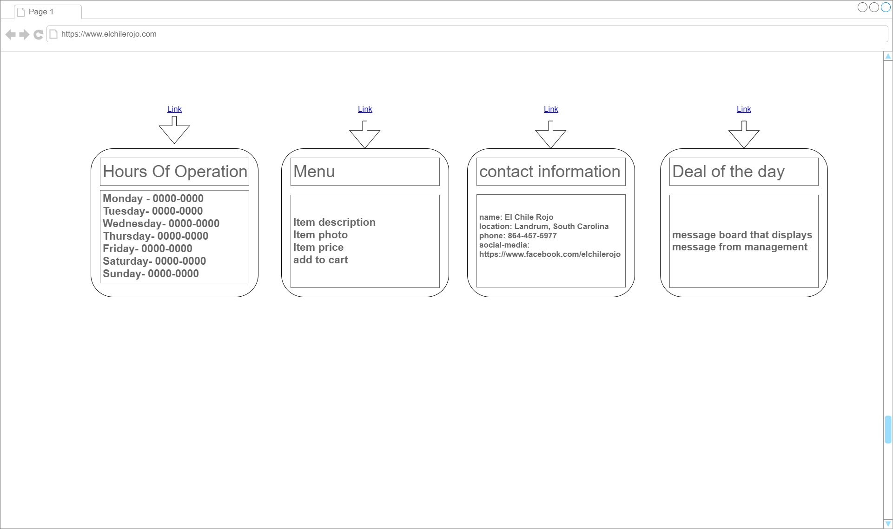

Requirements & Design
Site Map
WireFrame

Taylor Rogers
10 October 2021
The application is a restaurant website.
the intended users would be the community the restaurant serves
the content contained on the website will be:
menu with pictures
hours of operation
contact information
online ordering system
Updateable storyboard that allows business managers to post specials
business name: El Chile Rojo
business city: Landrum South Carolina
business phone: 864-457-5977
social-media: https://www.facebook.com/elchilerojo
Main page
introduce users to the updated site with the restaurant information
restaurant customer base
photo slide show, navigation menu, header, and footer with contact information
no
n/a
this page will contain dropdowns, links to other pages, and a button to see the deal of the day
when a user clicks on one of the dropdown options they will be redirected to the page of their choice to view the information presented
Menu
displays the menu and breaks down the choices into categories
restaurants customer's
photos of food, food descriptions, food cost, each category appetizer, entree, and drinks will have these
no
n/a
this page will contain dropdowns, links to other pages, and a button to add the item to the cart
Contact Us
displays restaurant contact information
restaurants local area
business phone number, Facebook, address
no
n/a
this page will contain dropdowns and links to other pages
when visiting this page you will be shown the business address, phone number, and social media links
the dynamic functionality I intend to implement on the website is to give each menu item an index and allow for the consumer to add the index to an array and then pass that array through to the restaurant where its values are displayed to the user. I also want a photo gallery of all photos on the home screen.